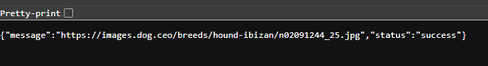
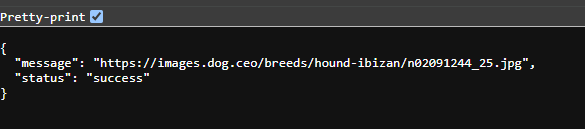
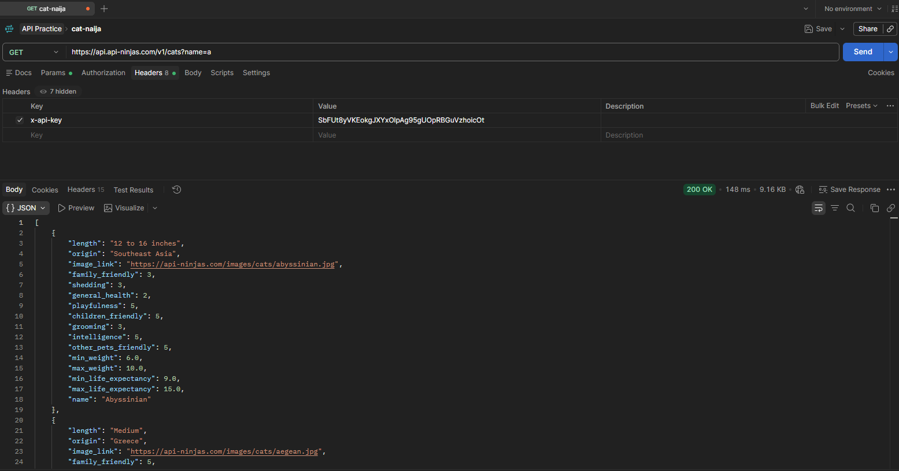
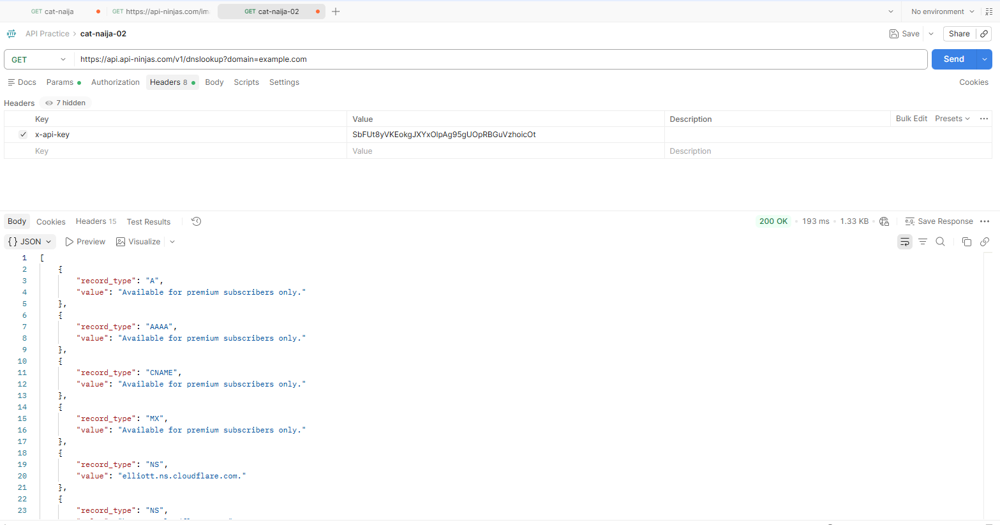

All About APIs!
Step 1 — The URL is the request


I tested the Dog API by requesting a random dog image, then formatted the returned JSON to make it easier to read.
{
"message": "https://images.dog.ceo/breeds/hound-afghan/n02088094_2062.jpg",
"status": "success"
}Here are some more dogs


Step 2 - Fetch the data

I used Postman to send a request to the Cat API and inspect the JSON response.
{
[
{
"length": "12 to 16 inches",
"origin": "Southeast Asia",
"image_link": "https://api-ninjas.com/images/cats/abyssinian.jpg",
"family_friendly": 3,
"shedding": 3,
"general_health": 2,
"playfulness": 5,
"children_friendly": 5,
"grooming": 3,
"intelligence": 5,
"other_pets_friendly": 5,
"min_weight": 6.0,
"max_weight": 10.0,
"min_life_expectancy": 9.0,
"max_life_expectancy": 15.0,
"name": "Abyssinian"
},
{
"length": "Medium",
"origin": "Greece",
"image_link": "https://api-ninjas.com/images/cats/aegean.jpg",
"family_friendly": 5,
"shedding": 3,
"general_health": 4,
"playfulness": 4,
"meowing": 4,
"children_friendly": 5,
"stranger_friendly": 4,
"grooming": 4,
"intelligence": 4,
"other_pets_friendly": 3,
"min_weight": 7.0,
"max_weight": 10.0,
"min_life_expectancy": 9.0,
"max_life_expectancy": 10.0,
"name": "Aegean"
}
}Step 3 - DNS Lookup
div class="img-cat01">
I used the DNS Lookup API to look up DNS records for a domain.The API response shows the record type and the value returned for each record.
{[
{
"record_type": "A",
"value": "Available for premium subscribers only."
},
{
"record_type": "AAAA",
"value": "Available for premium subscribers only."
},
{
"record_type": "CNAME",
"value": "Available for premium subscribers only."
},
{
"record_type": "MX",
"value": "Available for premium subscribers only."
},
{
"record_type": "NS",
"value": "elliott.ns.cloudflare.com."
},
{
"record_type": "NS",
"value": "hera.ns.cloudflare.com."
},
{
"record_type": "SOA",
"mname": "elliott.ns.cloudflare.com.",
"rname": "dns.cloudflare.com.",
"serial": 2411783310,
"refresh": 10000,
"retry": 2400,
"expire": 604800,
"ttl": 1800
},
{
"record_type": "TXT",
"value": "Available for premium subscribers only."
}
]}Step 4 - Process the data
I accessed the message property to get the dog image URL from the API response.
{.then(data => {
const dogImage = data.message;
console.log(dogImage);
});}Step 5 - Use the data
I used the image URL from the API response to display a dog on my webpage.
let dogImage = document.querySelector("#dog-image"); dogImage.src = data.message;